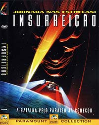
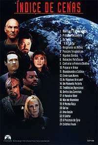

|
Por Luiz
Felipe do Vale Tavares
O
Filme
 Nesse
nono filme de Jornada nas Estrelas, um almirante da Frota
Estelar, auxiliado por uma raa aliengena chamada So'na,
planeja remover os Ba'ku, populao de um planeta aliengena,
para se apossar de um segredo que se encontra no planeta deles.
A tripulao da Enterprise-E, ao tomar conhecimento dos planos
do almirante, desobedece as ordens da Frota Estelar para proteger
os Ba'ku.
"Insurreio" um filme que sofreu do mal
"fazer por fazer", ou seja, um filme que foi feito
apenas para manter um ciclo de um filme de Jornada nas Estrelas
a cada dois anos. A histria muito simples, sem reviravoltas,
usando vrios elementos de episdios passados, sem muita
ambio e sem muita criatividade.
Entretanto, mesmo com todos esses elementos negativos,
Insurreio um bom filme. Tem boas atuaes, boa direo
de Jonathan Frakes, cenas de aventura legais, humor (embora
exagerado s vezes), bons efeitos especiais e garante simples
diverso pelas quase duas horas de durao.
A produo no to caprichada como em "Primeiro
Contato". Os sets de filmagem se resumem cidade
dos Ba'ku, que, fora as casas em si, tudo em volta uma paisagem
campestre californiana sem um mnimo de disfarce para parecer um
planeta aliengena. Seria legal se os tcnicos de efeitos
especiais colocassem mais algumas luas no cu, que por sua vez
poderia ter uma tonalidade diferente, e coisas do tipo. Ah, me
esqueci do bichinho de estimao do garoto que foi gerado por
computador. Bom... fora o tal bichinho, tudo que vemos em volta
a nossa boa e velha Terra.
Os efeitos especiais tambm no so to bons como em "Primeiro
Contato". Como a ILM (Industrial Light & Magic)
estava ocupada com "Star Wars: A Ameaa Fantasma", a
produo teve de recorrer Blue Sky, que uma empresa muito
competente, mas no to boa quando a ILM. Todas as naves foram
geradas por computador e como resultado tivemos uma certa
artificialidade no produto final. Muitas cenas no espao pareciam
mais 2D do que 3D. Eu ainda acredito que, em filmes de fico
cientfica, uma boa maquete , em ternos de realidade e
eficincia, muito superior a uma imagem gerada por computador.
Concluindo, temos uma boa aventura que poder entreter, desde que
no seja acompanhada com muitas expectativas.
Imagem
 A
Paramount realizou um excelente trabalho no tocante imagem de "Insurreio"
--ela bem definida, todos os detalhes em cena so visveis e
as cores so vivas. Temos s vezes a impresso de estar diante
de uma imagem tridimensional, principalmente nas cenas no planeta
Ba'ku.
O filme apresentado em widescreen anamrfico na proporo de
2,35:1. Tal resulta em uma experincia cinematogrfica onde a
cpia em VHS fica a anos-luz de distncia.
A autorao do DVD perfeita e no h sinais de compresso
de vdeo. Os menus so simples e sem imaginao, mas so de
fcil navegao.
Som
O udio apresentado em ingls (Dolby Digital 5.1) e espanhol
(Dolby Surround). Para quem tem crianas em casa ou prefere ver
filmes dublados, infelizmente a opo de udio em portugus
no est presente.
O DVD tem espao mais que suficiente para mais uma trilha de
udio adicional, lembrando que o "Insurreio"
para Regio 4 idntico ao Regio 1, com apenas uma nica
diferena, o importado tem trs trilhas de udio (ingls 5.1,
ingls 2.0 e francs 2.0). Portanto, conclumos que a Paramount
poderia muito bem incluir o udio em portugus na nossa
edio.
Eu particularmente no gosto de filmes dublados, mas acredito que
todos os DVDs devem vir com opo de udio em portugus,
quando disponvel, pois deve-se agradar a todas as preferncias,
principalmente para quem tem crianas pequenas em casa.
O som em ingls Dolby 5.1 excelente, mas no to bom quanto
o de "Primeiro Contato";
principalmente pelo fato de esse ser um filme um pouco mais calmo,
com menos cenas de ao e exploses. As caixas de som surround
trabalham para valer na cena em que Picard e cia. so atacados no
planeta Ba'ku pelas sondas com transporte. O subwoofer tambm faz
a sala tremer sempre que a Enterprise passa pela tela.
O udio em espanhol est disponvel em simples estreo
surround.
O DVD tem opes de legendas em ingls (timo para treinar
essa lngua), portugus e espanhol.
Extras
As primeiras verses em DVD dos filmes de Jornada
lanadas nos EUA no possuem grandes extras. Portanto, no
de se esperar que aqui fosse o contrrio.
Pelo menos "Insurreio" o nico DVD de
Jornada a contar com um curtssimo making of de 5 minutos (!!!)
mostrando os bastidores. pequeno, mas interessante,
principalmente para vermos uma amostra da amizade entre o elenco.
Tambm contm dois trailers de cinema bem legais, com opo de
udio 5.1.
Ficha
Tcnica
Extras:
Menu interativo, Seleo de Cena, Trailer Teaser, Trailer de
Cinema e Bastidores
Vdeo:
Widescreen (2,35:1) anamrfico
udio:
Ingls (Dolby Digital 5.1 Surround)
Espanhol (Dolby Digital 2.1 Surround)
Legendas:
Ingls, Portugus e Espanhol
Ano de produo:
1998
Durao:
103 minutos
Data de Lanamento no Brasil (Regio 4)
19/06/2001
|